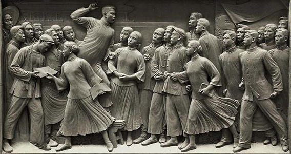

五卅运动

1925年5月15日，上海日商内外棉七厂资本家借口存纱不敷，故意关闭工厂， 停发工人工资。工人顾正红带领群众冲进厂内，与资本家论理，要求复工和开 工资。日本资本家非但不允，而且向工人开枪射击，打死顾正红，打伤工人10 余人，成为“五卅”运动的直接导火线。第二天，中共中央发出第32号通告， 紧急要求各地党组织号召工会等社会团体一致援助上海工人的罢工斗争。 19日，中共中央又发出第33号通告，决定在全国范围发动一场反日大运动。 28日，中共中央召开紧急会议，决定以反对帝国主义屠杀中国工人为中心口号， 发动群众于30日在上海租界举行反对帝国主义的游行示威。同时，为加强工会 组织的力量，决定由共产党人李立三、刘华等主持，成立上海总工会。随后， 刘少奇到达上海，参加上海总工会的指挥工作。
五卅运动是中国共产党领导下的群众性反帝爱国运动，是中国共产党直接领导的以工人阶级为主力军的中国人民反帝革命运动，标志着国民大革命高潮的到来